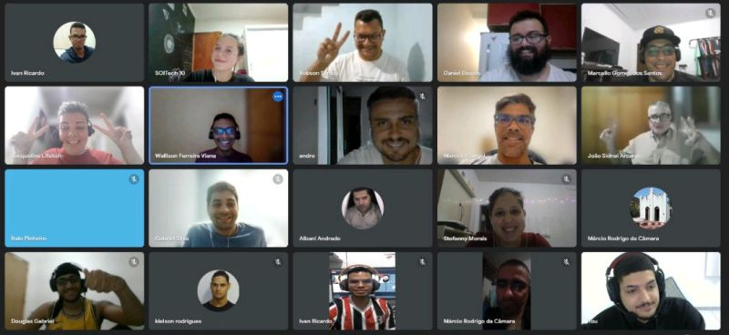

Portfolio nerd da Carolina
Códigos e algo mais
O que aprendi no Transforme-se
O programa Transforme-se do Serasa Experian ensina programação e dados para PcDs, em uma parceria com a Wise Hands, com o objetivo de colocá-los no mercado de trabalho.
.jpg "serasa divulgação")
O curso contém os seguintes módulos:
Primeiro módulo
- Informática básica
- Rotinas administrativas
Segundo módulo
- Git/Github
- HTML
- CSS
- Java Script
Terceiro módulo
Além disso, os alunos têm palestras com profissionais de TI da Serasa Experian.
